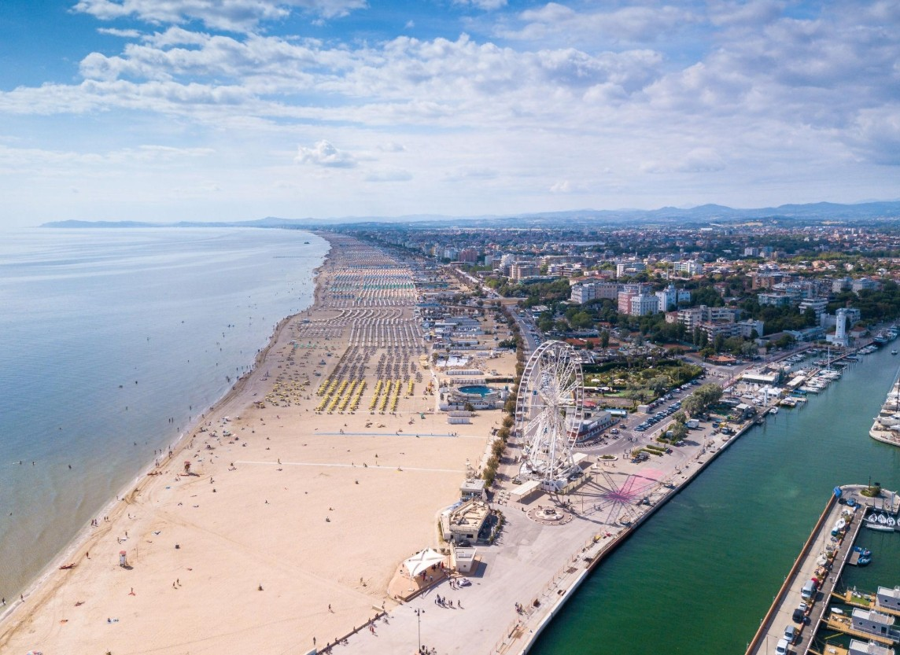
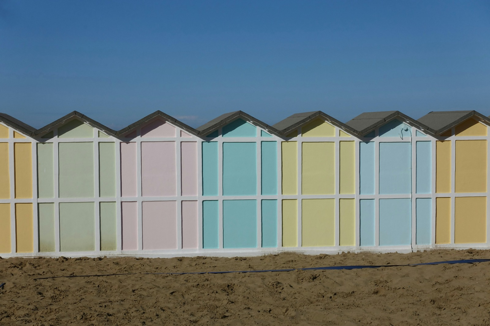

01 —
Eventi musicali
Nei club e sul territorioUn programma diffuso di serate, esibizioni e appuntamenti speciali nelle principali realtà dell'intrattenimento della Riviera, ciascuna con la propria identità.
.jpg?width=1920)
Una settimana di eventi, incontri e formazione che unisce i luoghi e le persone della musica lungo la Riviera Romagnola.
Scopri il progettoLa Riviera Romagnola ha costruito nel tempo un legame profondo con il mondo della musica e del divertimento.
Riviera Music Week nasce dall'idea di mettere in relazione questa identità con nuove opportunità di incontro, apprendimento e collaborazione.
Non soltanto una serie di serate, ma un progetto condiviso che coinvolge club, artisti, professionisti, imprese e territorio.
Una prima edizione pensata per crescere nel tempo e diventare un appuntamento ricorrente.

Rimini / Spiaggia e porto
Riviera / Cabine in pastelloUn programma diffuso di serate, esibizioni e appuntamenti speciali nelle principali realtà dell'intrattenimento della Riviera, ciascuna con la propria identità.
Lezioni, laboratori e conversazioni con artisti e professionisti per conoscere da vicino la produzione musicale, l'organizzazione degli eventi e i mestieri del settore.
Approfondimenti, progetti culturali e nuove forme di sperimentazione per raccontare il passato, il presente e le evoluzioni della musica contemporanea.
Dai club alle spiagge, dagli spazi dedicati alla formazione agli incontri aperti al pubblico. L'idea è dare vita a un programma distribuito tra le località simbolo della Riviera.
 Riccione / Spiaggia e costa
Riccione / Spiaggia e costaAlcune delle realtà che il progetto intende coinvolgere
Le realtà indicate rappresentano un'ipotesi di coinvolgimento e non adesioni già confermate.
L'ambizione è creare una piattaforma capace di valorizzare la cultura musicale, offrire occasioni di formazione e mettere in rete competenze, imprese e istituzioni.
Un progetto che nasce dal territorio e guarda alle istituzioni, alle associazioni di categoria e agli enti pubblici come partner naturali per crescere nel tempo.
Enti con cui si intende collaborare. Nessuna sponsorizzazione o adesione è da intendersi già confermata.
Rimini, panoramica aerea della spiaggia: Piiiiiiiiiiiiiiiiiiinna, Wikimedia Commons, CC BY-SA 3.0 (ritaglio e trattamento cromatico tramite impaginazione). Riccione: Stephen Kleckner, Wikimedia Commons, licenza CC BY-SA 4.0 (immagine ritagliata e corretta nei toni tramite impaginazione). Le fotografie della sezione «Il progetto» sono fornite dal committente. Le altre fotografie sono caricate da fonti esterne e richiedono connessione internet.